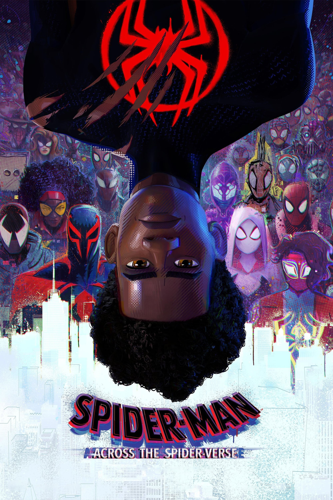

Spider-Man: Across the Spider-Verse
Anno di uscita: 2023

Durante la post-produzione, con l'uscita dei primi trailer promozionali del film, il giovane quattordicenne youtuber LegoMe_TheOG pseudonimo di Preston Mutanga realizzò una versione dei trailer in LEGO che vennero pubblicati su vari social, uno di questi video divenne in breve tempo virale, tanto da farsi notare dai produttori del film, che lo contattarono per realizzare una breve sequenza con i lego.
Trama:
Dopo essersi riunito con Gwen Stacy, l'amichevole Spider-Man di Brooklyn viene catapultato attraverso il Multiverso, dove incontra la Spider Society, una squadra di Spider-Man incaricata di proteggere l'esistenza stessa del Multiverso. Ma quando gli eroi si scontrano su come affrontare una nuova minaccia, Miles si ritrova a fronteggiare gli altri Spider-Man e deve partire da solo per salvare coloro che ama di più.
Regia:
Justin K. Thompson, Kemp Powers, Joaquim Dos Santos
Studio di animazione:
Candidato all'Oscar nel
2024